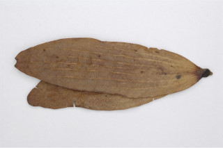
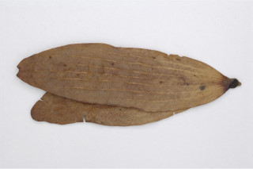

Trees up to 35 m tall.
35 ಮೀ. ಎತ್ತರದವರೆಗಿನ ಮರಗಳು.
35 മീറ്റര് വരെ ഉയരത്തില് വളരുന്ന മരങ്ങള്
மரம் 35 மீ. உயரம் வரை வளரக்கூடியது
Bark brown, scaly.
ತೊಗಟೆ ಕಂದು ಬಣ್ಣಹೊಂದಿದ್ದು ಶಲ್ಕಾಯುಕ್ತವಾಗಿರುತ್ತದೆ.
ശലക്കങ്ങളുളള, തവിട്ട നിറത്തിലുളള പുറംതൊലി.
மரத்தின் பட்டை அரக்கு நிறமுடையது, வெடிப்புகளுடையது.
Branchlets terete, pubescent when young.
ಕಿರುಕೊಂಬೆಗಳು ದುಂಡಗಿದ್ದು, ಎಳೆಯದಾಗಿದ್ದಾಗ ಮೃದುತುಪ್ಪಳ ಸಹಿತವಾಗಿರುತ್ತವೆ.
ഇളതായിരിക്കുമ്പോള് ചെറുതായി രോമിലമായ, ഉരുണ്ട ഉപശാഖകള്.
சிறுநுனிக்கிளைகள், குறுக்குவெட்டுத் தோற்றத்தில் வளையமானது, உரோமங்களுடையது.
Leaves simple, alternate, spiral; stipules caducous; petiole to 0.6 cm long, slightly canaliculate above, pubescent when young; lamina 4.5-10 x 1.5-3.5 cm, lanceolate or narrow ovate, apex narrow acute to gradually acuminate, base rounded to subcordate, margin entire, chartaceous, glabrous except few scattered hairs at margin and on midrib beneath; domatia at the axils of secondary_nerves, but not on all the leaves; midrib raised above; secondary_nerves 5-12 pairs, raised above, lowest pair opposite and closer to the next secondary_nerve; tertiary_nerves closely_horizontally_percurrent.
ಎಲೆಗಳು ಸರಳವಾಗಿದ್ದು, ಪರ್ಯಾಯ ಹಾಗೂ ಸುತ್ತು ಜೋಡನಾ ವ್ಯವಸ್ಥೆಯಲ್ಲಿರುತ್ತವೆ; ಕಾವಿನೆಲೆಗಳು ಉದುರಿಹೋಗುತ್ತವೆ;ತೊಟ್ಟುಗಳು ಅಂದಾಜು 0.6 ಸೆಂ.ಮೀ.ಉದ್ದವಿರುತ್ತವೆ ಹಾಗೂ ಕೊಂಚ ಕಾಲುವೆಗೆರೆ ಸಮೇತವಾಗಿರುತ್ತವೆ,ಎಳೆಯದಾಗಿದ್ದಾಗ ಮೃದುತುಪ್ಪಳ ಸಹಿತವಾಗಿರುತ್ತವೆ;ಪತ್ರಗಳು 4.5-10 X1.5-3.5 ಸೆಂ.ಮೀ ಗಾತ್ರ, ಭರ್ಜಿ ಅಥವಾ ಸಂಕುಚಿತ ಅಂಡದ ಆಕಾರ,ಸಂಕುಚಿತ-ಚೂಪಾದುದರಿಂದ ಕ್ರಮೇಣ ಚೂಪಾಗುವ ತುದಿ,ದುಂಡಾದುದರಿಂದ ಹಿಡಿದುಉಪ-ಹೃದಯಾಕಾರದ ಬುಡ ಹೊಂದಿದ್ದು ನಯವಾದ ಅಂಚನ್ನು ಹೊಂದಿದ್ದು ತೊಗಲನ್ನೋಲುವ ರೀತಿಯಲ್ಲಿರುತ್ತವೆ, ಅಂಚಿನಲ್ಲಿ ಮತ್ತು ಪತ್ರದ ತಳಭಾಗದಲ್ಲಿನ ಮಧ್ಯನಾಳದ ಮೇಲೆ ಕೆಲವು ಚದುರಿದ ರೋಮಗಳನ್ನು ಹೊರತು ಪಡಿಸಿದರೆ ಪತ್ರಗಳು ರೋಮರಹಿತವಾಗಿರುತ್ತವೆ;ಸಹಜೀವಿ ಗೂಡುಗಳು ಎರಡನೇ ದರ್ಜೆಯ ನಾಳಗಳ ಅಕ್ಷದಲ್ಲಿರುತ್ತವೆ, ಆದರೆ ಎಲ್ಲಾ ಎಲೆಗಳಲ್ಲಿ ಇರುವುದಿಲ್ಲ; ಮಧ್ಯನಾಳಗಳು ಪತ್ರದ ಮೇಲ್ಭಾಗದಲ್ಲಿ ಉಬ್ಬಿರುತ್ತವೆ ;ಎರಡನೇ ದರ್ಜೆಯ ನಾಳಗಳು 5-12 ಜೋಡಿಗಳಿದ್ದು ಪತ್ರದ ಮೇಲ್ಭಾಗದಲ್ಲಿ ಉಬ್ಬಿರುತ್ತವೆ,ತಳಗಿನ ಜೋಡಿ ಅಭಿಮುಖವಾಗಿದ್ದು ನೆರೆಯ ಎರಡನೇ ನಾಳಕ್ಕೆ ಸನಿಹವಾಗಿರುತ್ತದೆ; ಮೂರನೇ ದರ್ಜೆಯ ನಾಳಗಳು ಲಂಬರೇಖೆಗೆ ಸಮಕೋನದಲ್ಲಿದ್ದು, ಸನಿಹವಾಗಿ ಎಲೆದಿಂಡಿಗೆ ಅಡ್ಡವಾಗಿ ಕೂಡುವಂತವು.
ലഘുവായ ഇലകള്, എകാന്തരമായി സര്പ്പിളക്രമത്തിലാണ്; അനുപര്ണ്ണങ്ങല് എളുപ്പംകൊഴിഞ്ഞ് വീഴുന്നതാണ്; 0.6 സെ.മീ വരെനീളമുളള ഇലഞെട്ട്, മുകളില് ചെറുതായി ചാലോട്കൂടിയതും, ഇളതായിരിക്കുമ്പോള് ചെറുതായി രോമിലവുമാണ്; പത്രഫലകത്തിന് 4.5 സെ.മീ മുതല് 10 സെ.മീ വരെ നീളവും 1.5 സെ.മീ മുതല് 3.5 സെ.മീ വരെ വീതിയും, കുന്താകൃതിയോ വീതികുറഞ്ഞ അണ്ഡാകൃതിയോ ആണ്, പത്രാഗ്രം നേര്ത്ത്-കൂര്ത്തതു തൊട്ട് ചെറുവാലോട് കൂടിയതോ ആണ്, പത്രാധാരം വൃത്താകാരം മുതല് ഉപഹൃദയാകാരംവരെയാണ്, അരികുകള് അവിഭജിതമാണ്, കടലാസ്പോലത്തെ പ്രകൃതം, അരികുകളിലും മുഖ്യസിരയില് കീഴ്ഭാഗത്തും അവിടവിടെയുണ്ടാകുന്ന ഏതാനും രോമങ്ങളൊഴിച്ചാല് അരോമിലമാണ്; ദ്വിതീയ ഞരമ്പുകളുടെ കക്ഷങ്ങളില് ഡോമേഷ്യയുണ്ട്, എന്നാലിത് എല്ലാ ഇലകളിലും ഉണ്ടാവണമെന്നില്ല; മുഖ്യസിര മുകളില് ഉയര്ന്ന് നില്ക്കുന്നതാണ്; മുകളില് ഉയര്ന്നുനില്ക്കുന്ന ഏതാണ്ട് 5 മുതല് 12 വരെ ജോഡി ദ്വിതീയ ഞരമ്പുകളുണ്ട്, ഇതില് ഏറ്റവും താഴത്തെ ജോഡി സമ്മുഖവും തൊട്ടടുത്ത ദ്വിതീയ ഞരമ്പിന് അടുത്തു നില്ക്കുന്നതുമാണ്; ത്രിതീയ ഞരമ്പുകള് തിരശ്ചീനമായി അടുത്ത് നില്ക്കുന്ന പെര്കറന്റ് വിധത്തിലാണ്.
இலைகள் தனித்தவை, மாற்றுஅடுக்கமானவை, சுழல் அமைப்பு கொண்டது; இலையடிச்செதில்கள் உதிரக்கூடியது; இலைக்காம்பு 0.6 செ.மீ. வரை நீளமானது, குறுக்குவெட்டுத் தோற்றத்தில் சிறிது கேனாலிகுலேட், புதிய இலைக்காம்பு உரமோங்களுடையது; இலை அலகு 4.5-10 X 1.5-3.5 செ.மீ., ஈட்டி வடிவம் அல்லது குறுகிய முட்டை வடிவம், அலகின் நுனி குறுகி கூர்மையானது முதல் சிறிது சிறிதாக குறுகி வால் போன்று நீண்டு கூர்மையானது, அலகின் தளம் வட்டமானது முதல் சிறிய இதய வடிவானது (சப்கார்டேட்), அலகின் விளிம்பு முழுமையானது, சார்ட்டேசியஸ் உரோமங்களற்றது, உரோமங்கள் மையநரம்பின் அடிப்பரப்பிலும் மற்றும் இலையின் விளிம்பிலும் ஆங்கொன்றாக காணப்படும்; டொமேஸ்சியா இரண்டாம் நிலை நரம்பு கோணப்பகுதியில் காணப்படும்; மையநரம்பு மேற்பரப்பில் அலகின் பரப்பைவிட உயர்ந்தது; இரண்டாம் நிலை நரம்புகள் 5-12 ஜோடிகள், மேற்பரப்பில் உயர்ந்தது, தளத்திலுள்ள ஒரு ஜோடி நரம்புகள் எதிரானது; மூன்றாம் நிலை நரம்புகள் பெர்க்கரண்ட்.
Inflorescence panicles, tomentose; flowers white.
ಪುಷ್ಪಮಂಜರಿಗಳು ಪುನರಾವೃತ್ತಿಯಾಗಿ ಕವಲೊಡೆಯುವ ಮಾದರಿಯಲ್ಲಿದ್ದು ಮೃದುತುಪ್ಪಳದಿಂದ ಕೂಡಿರುತ್ತವೆ;ಹೂಗಳು ಬಿಳಿ ಬಣ್ಣದವು.
പൂങ്കുലകള് കനത്ത രോമാവൃതമായ പാനിക്കിളുകളാണ്; പൂക്കള് വെളുത്തതാണ്.
பேனிக்கிள் மஞ்சரி, மென்உரோமங்களுடையது; மலர்கள் வெண்நிறமுடையது.
Nut with accrescent_calyx_lobes; seed 1.
ಕಾಯಿಗಳು ಕರಟ ಮಾದರಿಯಲ್ಲಿದ್ದು ವೃಧ್ದಿಸಿದ ಪುಷ್ಪಪಾತ್ರೆ ಸಮೇತವಿರುತ್ತವೆ ಹಾಗೂ ಒಂದು ಬೀಜವನ್ನೊಳಗೊಂಡಿರುತ್ತವೆ.
കായ, ഒറ്റവിത്തുളളതും, ഉറച്ചുനില്ക്കുന്ന വിദളങ്ങളോടുകൂടിയ നട്ട് ആണ്.
உலர்கனி (நட்) மற்றும் நிரந்தரமான புல்லி இதழ்கள் உடையவை; ஒரு விதை கொண்டது.
 
